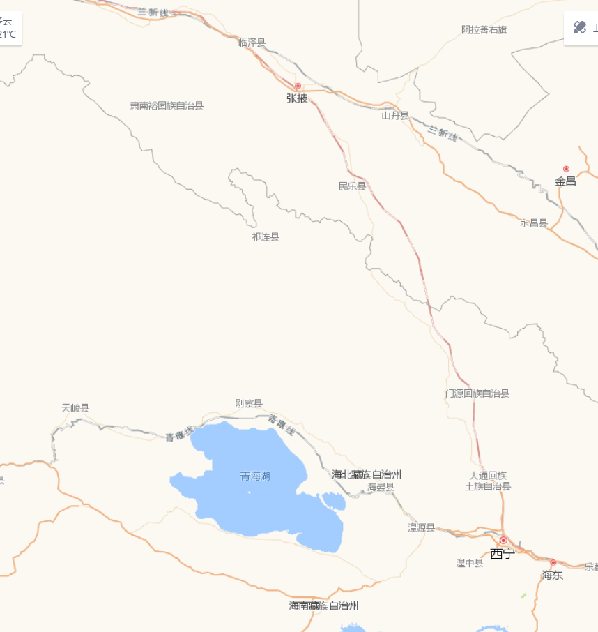

青海旅游线路
第四天 10.1
0.5
阿柔大寺
0.5
祁连草原
2.5
扁都峡
3.5
卓尔山
石云墅酒店
第4天
酒店 : 石云墅
备选酒店：鼎盛宾馆、天鸿大酒店、丹霞明月酒店
购物地点 :
景点 : 卓尔山
约07:00早餐后乘车前往【卓尔山】| 行驶距离：约70公里 | 行驶时间：约1小时；
卓尔山属于丹霞地貌，由红色砂岩、砾岩组成。藏语称为"宗穆玛釉玛"，意为美丽的红润皇后。卓尔山景区紧靠八宝河与藏区神山阿咪东索牛心山隔河相望。站在卓儿山顶视野极度开阔，四周没有任何遮拦，山对面是一山尽览四季景色的牛心山，左右两侧分别是拉洞峡和白杨沟风景区，背面是连绵起伏的祁连山，山脚下滔滔八宝河像一条白色的哈达环绕在县城周边；
约11:30自行享用午餐；
景点 : 阿柔大寺
约12:30午餐后稍作休息，继续出发前往【阿柔大寺】| 行驶距离：约24公里 | 行驶时间：约30分钟 ；
阿柔大寺：又称“阿力克大寺”，位于祁连县八宝镇的东南21公里处，游客游玩祁连到门源等地时多会经过这里。寺院始建于清顺治年间，建寺伊始规模较小，到20世纪40年代，在阿柔千户南喀才昂和百户阿多等人的支持下发展壮大，成为祁连县规模最大的格鲁派寺院。该寺的大型活动有正月祈愿法会、四月的守斋戒会、六月的供养会和住夏活动、十月的甘丹五供节以及显宗学院的四季学经期会和修供大威德金刚、马首金刚的仪轨等。
景点 : 祁连草原
约13:30乘车前往【祁连大草原】| 行驶距离：约20公里 | 行驶时间：约30分钟；
祁连草原，它的代表大马营草原在焉支山和祁连山之间的盆地中。每年
7、8月间，与草原相接的祁连山依旧银装素裹，而草原上却碧波万顷，马、牛、羊群点缀其中；
景点 : 扁都峡
约14:30感受草原之美之后到达【扁都峡】，沿途风景美不胜收。| 行驶距离：约35公里 | 行驶时间：约50分钟 ；
历史上，此峡是南通河煌、北达甘凉的险关要隘，历来为兵家必争之地，因此在扁都峡便上演了一幕幕惊天动地、可歌可泣的历史画卷。